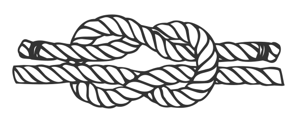
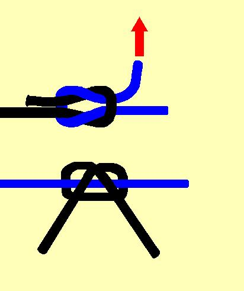
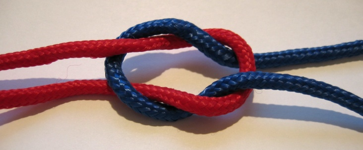
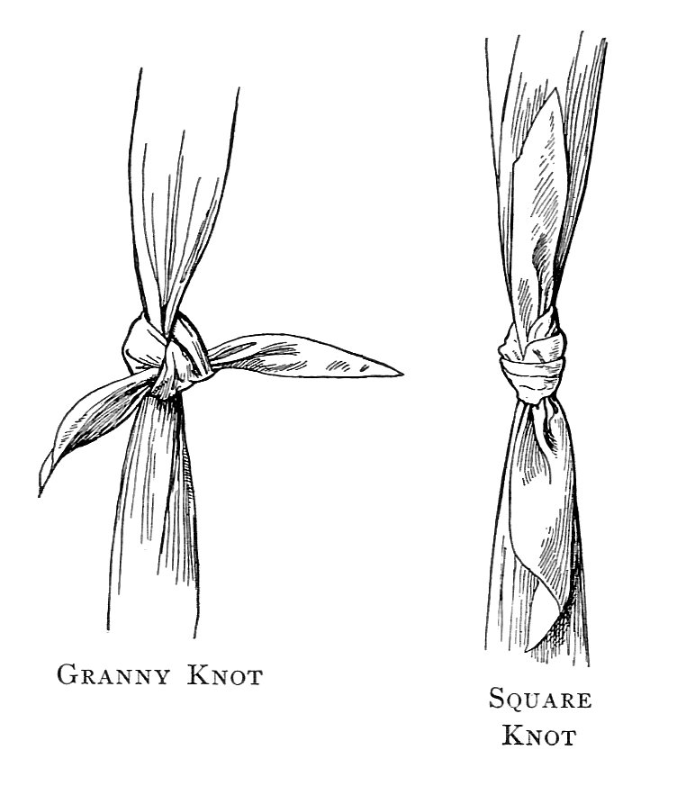
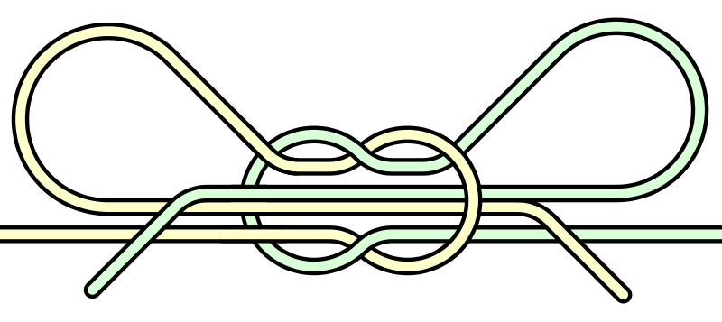

Knots
Joeys are only meant to learn one knot, which is the reef knot. However a couple of others are probably fine to play about with.
Reef Knot
The reef knot is also known as a Double Knot or a Square Knot.
How to tie
The way to tie a reef knot can be remembered as 'left over right (and under), right over left (and under)', however that's fairly hard for Joeys to understand. I usually show them the initial overhand knot and then ask them to keep the rope that is under, under and the rope that is over, over.
Uses
- To tie two ends of the same rope together in order to secure something.
- To tie the ends of a bandage together (because it is flat and easy to undo).
- To tie belts such as in Karate and Judo.
Problems
The reef knot can easily capsize, ie collapse into a non-safe knot, if you pull one end. Some say that failed reef knots have killed more people than any other failed knot in history. It is especially important never to use a reef knot to tie two different ropes together as it will capsize very readily under pressure, especially if the ropes are different diameters. Using a sheet bend or similar bend is safer.
Granny Knot
A granny knot is a wrongly tied reef knot. It is right over left, right over left again. A granny knot is weaker than a reef knot despite having mainly the same uses, so a reef knot is almost always preferred.
You can show your Joeys how this knot is 'ugly' compared to a reef knot, to get them to check if their reef knots are correct. One very noticeable difference between the granny knot and the reef knot is that in the granny knot the short ends stick out sideways, whereas in the reef knot the short ends lay along the long ends. 
Shoelace knot (double slipped reef knot)
The knot we should use to tie our shoes is a special type of reef knot, one which has its second part tied with loops (bights) rather than the ends of the rope. Another name for this knot is a Bow Knot. It is probably the most useful knot a Joey can learn.
Strangely, the knot most people get taught to tie their shoes with is a Double Slipped Granny Knot, rather than the reef equivalent. Look at your knot next time you tie your shoes and see if the ends stick out perpendicular to the loops (ie it's a granny knot) or if the ends lay flat against the loops (ie it's a reef knot). If your shoes easily untie during the day you should probably try tying a proper Double Slipped Reef Knot instead.